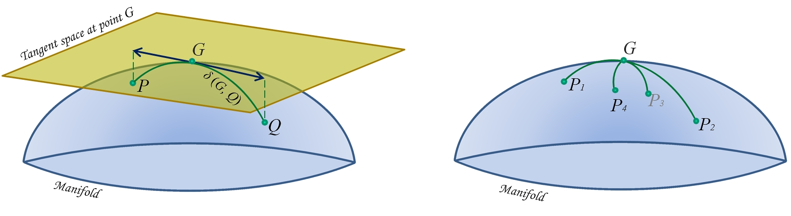

Intro to Riemannian Geometry
The study of appropriate distance measures for positive definite matrices has recently grown very fast, driven by practical problems in radar data processing, image processing, computer vision, shape analysis, medical imaging (especially diffusion MRI and Brain-Computer Interface), sensor networks, elasticity, mechanics, numerical analysis and machine learning (e.g., see references in Congedo et al., 2017a)🎓.
In many applications the observed data can be conveniently summarized by positive definite matrices, which are either symmetric positive definite (SPD: real) or Hermitian Positive Definite (HPD: complex). For example, those may be some form of the data covariance matrix in the time, frequency or time-frequency domain, or autocorrelation matrices, kernels, slices of tensors, density matrices, elements of a search space, etc. Positive definite matrices are naturally treated as points on a smooth Riemannian manifold allowing useful operations such as interpolation, smoothing, filtering, approximation, averaging, signal detection and classification. Such operations are the object of the present PosDefManifold library.
More formally, this Julia library treats operations on the metric space $($P$, δ^2)$ of n・n positive definite matrices endowed with a distance or symmetric divergence $δ($P x P$)→[0, ∞]$. Several matrix distances or matrix divergences $δ$ are considered. Using some of them, the most important one being the Fisher metric, we define a Riemannian manifold. In mathematics, this is the subject of Riemannian geometry and information geometry.
Note that throughout this library the word 'metric' is used loosely for referring to the actual Riemannian metric on the tangent space and to the resulting distance or to general symmetric divergence acting on P, regardless the fact that we are dealing with a metric in the strict sense and that it induces or not a Riemannian geometry in P. This is done for convenience of exposition, since in practice those 'metrics' in PosDefManifold may be used interchangeably.
Riemannian manifolds
Here are some important definitions:
A smooth manifold in differential geometry is a topological space that is locally similar to the Euclidean space and has a globally defined differential structure.
The tangent space at point $G$ is the vector space containing the tangent vectors to all curves on the manifold passing through $G$ (Fig. 1).
A smooth Riemannian manifold is equipped with an inner product on the tangent space (a Riemannian metric) defined at each point and varying smoothly from point to point. For manifold P the tangent space is the space of symmetric or Hermitian matrices.
Thus, a Riemannian metric turns the metric space $($P$, δ^2)$ into a Riemannian manifold. This is the case, for example, of the Fisher metric, which has a fundamental role in the manifolds of positive definite matrices and of the Wasserstein metric, fundamental in optimal transport theory.
 Figure 1. Schematic illustration of the Riemannian manifold of positive definite matrices. Left: geodesic relying points $P$ and $Q$ passing through its-mid-point (mean) $G$ (green curve), tangent space at point $G$ with tangent vectors to geodesic from $G$ to $P$ and from $G$ to $Q$ (blue arrowed lines) and distance $δ(G, Q)$. Right: the center of mass (also named mean) $G$ of points $P_1,…,P_4$ defined as the point minimizing the sum of the four squared distances $δ²(G, P_i)$, for $i={1,…,4}$.
geodesic
The key object in the P manifold is the geodesic, loosely defined as the shortest path joining two points $P$ and $Q$ on the manifold, analogous to straight lines in the Euclidean space (Fig. 1). The gedesic equation with arclength $0≤a≤1$ is the equation of the points along the path, denoted $\gamma(P, Q, a)$ where with $a=0$ we stay at $P$ and with $a=1$ we move all the way to $Q$. The points along the geodesic in between $P$ and $Q$ $(0<a<1)$ can be understood as weighted means of $P$ and $Q$. For example, the geodesic equation according to the Euclidean metric is $(1-a)P + aQ$, which is the traditional way to define weighted means. With the metrics we consider here, geodesics are unique and always exist. Furthermore, as we will see, using the Fisher metric those geodesics extends indefinitely, i.e., they are definied and always remain positive definite for $-∞<a<∞$.
distance
The length of the geodesic (at constant velocity) between two points gives the distance $δ(P, Q)$. The distance is always real, non-negative and equal to zero if and only if $P=Q$.
distance from the origin
In contrast to an Euclidean space, the origin of the P manifold endowed with the Fisher metric is not $0_n$, but $I_n$, the identity matrix of dimension n・n. The distance between a point $P$ and the origin, i.e., $δ(P, I)$, is analogous therein to the length of vectors in Euclidean space. This Riemannian manifold is symmetric around $I_n$, i.e., $δ(P, I)=δ(P^{-1}, I)$ and $δ(P, Q)=δ(P^{-1}, Q^{-1})$. This will be made more precise when we talk about invariances.
mean
The mid-point on the geodesic relying $P$ and $Q$ is named the mean. Using the Euclidean metric this is the arithmetic mean of $P$ and $Q$ and using the inverse Euclidean metric this is their harmonic mean. As we will see, those are straightforward extensions of their scalar counterparts. Using the Fisher metric the mid-point of the geodesic relying $P$ and $Q$ allows the proper generalization to matrices of the scalars' geometric mean. The other metrics allows other definition of means (see below).
Fréchet mean
Using Fréchet's variational approach we can extend to positive-definite matrices the concept of weighted mean of a set of scalars; as the midpoint $G$ on the geodesic relying $P$ and $Q$ is the minimizer of $\sigma^2(P, G)+\sigma^2(Q, G)$, so the mean $G$ of points $P_1, P_2,...,P_k$ is the matrix $G$ verifying
$\textrm{argmin}_{G}\sum_{i=1}^{k}δ^2(P_i,G).$
Thus, every metric induces a distance (or divergence) function, which, in turn, induces a mean.
invariances
An important characteristic of metrics is that they may induce invariance properties on the distance, which are in turn inherited by the mean.
Let us denote shortly by $\{P_i\}$ the set $\{P_1,...,P_k\}$, where $i=\{1,...,k\}$ and by $G\{P_i\}$ the Fréchet mean of the set (in this section we drop the weights here for keeping the notation short). The most important invariance properties are:
| invariance | effect on distance $δ(P,Q)$ | effect on mean $G\{P_i\}$ |
|---|---|---|
| rotation | $δ(P,Q)=δ(U^HPU,U^HQU)$ | $G\{U^HP_iU\}=U^HG\{P_i\}U$ |
| affinity | $δ(P,Q)=δ(B^HPB,B^HQB)$ | $G\{B^HP_iB\}=B^HG\{P_i\}B$ |
| inversion | $δ(P,Q)=δ(P^{-1},Q^{-1})$ | $G\{P_i^{-1}\}=G^{-1}\{P_i\}$ |
for any unitary $U$ and non-singular $B$.
The affine invariance implies the rotation invariance and is also named congruence invariance.
metrics
We are interested in distance or divergence functions, the difference between the two being that a divergence does not need to be symmetric nor to satisfy the triangle inequality. Note that in PosDefManifold we consider only distances and symmetric divergences. In fact those are of greater interest in practice. One can find several distances and divergences in the literature and they often turn out to be related to each other, see for example (Chebby and Moakher, 2012; Cichocki et al., 2015; Sra, 2016)🎓. Ten of them are implemented in PosDefManifold and two of them are Riemannian metrics (the Fisher and Wasserstein metric as we have said). In this section we give a complete list of the expressions for their induced
- distance of a point $P$ from the origin,
- distance between two points $P$ and $Q$,
- geodesic relying $P$ to $Q$ (hence the weighted means of $P$ and $Q$)
- weighted Fréchet mean $G(P,w)$ of a set of $k>2$ points $\{P_1,...,P_k\}$ with associated real non-negative weights $\{w_1,...,w_k\}$ summing up to 1.
In the following, the weights $\{w_1,...,w_k\}$ are always supposed summing up to 1, superscript $H$ indicate conjugate transpose (or just transpose if the matrix is real) and if $a$ is the arclength of a geodesic, we define for convenience $b=1-a$.
Euclidean
This is the classical Euclidean distance leading to the usual arithmetic mean. In general this metric is not well adapted to the P manifold. It verifies only the rotation invariance, however the mean also verifies the congruence invariance.
| distance² to $I$ | distance² |
|---|---|
| $∥P-I∥^2$ | $∥P-Q∥^2$ |
| geodesic | Fréchet mean |
|---|---|
| $bP + aQ$ | $\sum_{i=1}^{k}w_i P_i$ |
inverse Euclidean
This is the classical harmonic distance leading to the harmonic mean. It verifies only the rotation invariance, however the mean also verifies the congruence invariance.
| distance² to $I$ | distance² |
|---|---|
| $∥P^{-1}-I∥^2$ | $∥P^{-1}-Q^{-1}∥^2$ |
| geodesic | Fréchet mean |
|---|---|
| $\big(bP^{-1} + aQ^{-1}\big)^{-1}$ | $\big(\sum_{i=1}^{k}w_i P_i^{-1}\big)^{-1}$ |
Cholesky Euclidean
This is a very simple metric that has been tried to improve the Euclidean one. It is rarely used (see for example Dai et al., 2016)🎓. It does not verify any invariance. Let $L_P$ be the lower triangular Cholesky factor of $P$, then
| distance² to $I$ | distance² |
|---|---|
| $∥L_P-I∥^2$ | $∥ L_P-L_Q ∥^2$ |
| geodesic | Fréchet mean |
|---|---|
| $(bL_P+aL_Q)(bL_{P}+aL_{Q})^H$ | $\big(\sum_{i=1}^{k}w_i L_{P_i}\big)\big(\sum_{i=1}^{k}w_i L_{P_i}\big)^H$ |
log Euclidean
If matrices $\{P_1,...,P_k\}$ all pair-wise commute, then this metric coincides with the Fisher metric. See (Arsigny et al., 2007 ; Bhatia et al., 2019a)🎓. It enjoys the rotation and inversion invariance. The log-Euclidean distance to $I$ is the same as per the Fisher metric. This mean has the same determinant as the Fisher mean, and trace equal or superior to the trace of the Fisher mean. A minimum trace log Euclidean mean approximating well the Fisher mean has been proposed in Congedo et al. (2015)🎓.
| distance² to $I$ | distance² |
|---|---|
| $∥\textrm{log}(P)∥^2$ | $∥\textrm{log}(P)-\textrm{log}(Q)∥^2$ |
| geodesic | Fréchet mean |
|---|---|
| $\textrm{exp}\big(\textrm{log}P + a\textrm{log}Q\big)$ | $\textrm{exp}\big(\sum_{i=1}^{k}w_i\hspace{1pt}\textrm{log}P_i\big)$ |
log Cholesky
It is a recently proposed distance in P. Like the Cholesky Euclidean metric here above, it exploits the diffeomorphism between matrices in P and their Cholesky factor, such that $L_PL_P^H=P$, thanks to the fact that the Cholesky factor is unique and that the map is smooth (Lin, 2019)🎓. The mean has the same determinant as the Fisher and log-Euclidean mean.
Let $L_X$,$S_X$ and $D_X$ be the lower triangle, the strictly lower triangle and the diagonal part of $X$, respectively (hence, $S_X+D_X=L_X$), then
| Distance² to $I$ | Distance² |
|---|---|
| $∥S_P-I∥^2+∥\textrm{log}D_P∥^2$ | $∥S_P-S_Q∥^2+∥\textrm{log}D_P-\textrm{log}D_Q∥^2$ |
geodesic: $S_P+a(S_Q-S_P)+D_P\hspace{2pt}\textrm{exp}\big(a\textrm{log}D_Q-a\textrm{log}D_P\big)$
Fréchet mean: $TT^H$, where $T=\sum_{i=1}^{k}w_iS_{P_i}+\sum_{i=1}^{k}w_i\textrm{log}D_{P_i}$
Fisher
The Fisher metric, also known as affine-invariant, natural and Fisher-Rao metric, among others names, has a paramount importance for the P manifold, standing out as the natural choice both from the perspective of differential geometry and information geometry. Endowed with the Fisher metric the manifold P is Riemannian, has nonpositive curvature and is symmetric. This metric verifies all three invariances we have considered.
| Distance² to $I$ | Distance² |
|---|---|
| $∥\textrm{log}(P)∥^2$ | $∥\textrm{log}(P^{-1/2}QP^{-1/2})∥^2$ |
| geodesic |
|---|
| $P^{1/2} \big(P^{-1/2} Q P^{-1/2}\big)^a P^{1/2}$ |
Fréchet mean: it does not have a closed-form solution in general. The solution is the unique positive definite matrix $G$ satisfying (Bhatia and Holbrook, 2006; Moakher, 2005).🎓
$\sum_{i=1}^{k}w_i\textrm{log}\big(G^{-1/2} P_i G^{-1/2}\big)=0.$
For estimating it, PosDefManifold implements the well-known gradient descent algorithm, resulting in iterations:
$G ←G^{1/2}\textrm{exp}\big(\sum_{i=1}^{k}w_i\textrm{log}(G^{-1/2} P_i G^{-1/2})\big)G^{1/2}.$
Alternatively, and more efficiently, one can ask for an approximate solution invoking the MPM algorithm (Congedo et al., 2017b)🎓, which is also implemented (in order to estimate the geometric mean use function powerMean with parameter $p=0$ or with a very small value of $p$).
This mean is known under many different names (Fisher, Rao, Fisher-Rao, Pusz-Woronowicz, Cartan, Fréchet, Karcher, geometric....). The ‘centrality’ of this mean among a wide family of divergence-based means can be appreciated in Fig. 4 of Cichocki et al. (2015)🎓.
The geometric mean $G$ of two matrices $P$ and $Q$ is denoted $\gamma(P, Q, \frac{1}{2})$. Currently it is an object of intense study because of its interesting mathematical properties. For instance,
- it is the unique solution to Riccati equation $GQ^{-1}G=P$
- it is equal to $F^{-H}D_1^{1/2}D_2^{1/2}F^{-1}$ for whatever joint diagonalizer $F$ of $P$ and $Q$, i.e., for whatever matrix $F$ satisfying $F^HPF=D_1$ and $F^HQF=D_2$, with $D_1$, $D_1$ non-singular diagonal matrices (Congedo et al., 2015)🎓.
- it enjoys all 10 properties of means postulated in the seminal work of Ando et al. (2010)🎓.
When $P$ and $Q$ commutes, the Fisher mean of two matrices reduces to $P^{1/2}Q^{1/2}$, which indeed in this case is the log-Euclidean mean $\frac{1}{2}\textrm{log}P + \frac{1}{2}\textrm{log}Q$.
We denote the Fisher geodesic equation as $\gamma(P, Q, a)$. Note that $\gamma(I, P, a)=P^a$ and $\gamma(P, I, a)=P^{b}$, where $b=1-a$.
Fisher geodesic equation verifies $\gamma(P, Q, a)=\gamma(Q, P, b)$ and $(\gamma(P, Q, a))^{-1}=\gamma(P^{-1}, Q^{-1}, a)$.
An interesting property of the Fisher metric is that using its geodesic equation we can extrapolate positive matrices, always remaining in P. That is, using any real value of $a$ :
- with $0 < a < 1$ we move toward $Q$ (attraction),
- with $a > 1$ we move over and beyond $Q$ (extrapolation) and
- with $a< 0$ we move back away from $Q$ (repulsion).
Something similar can be done using the log Cholesky metric as well.
power means
The arithmetic, harmonic and geometric mean we have encountered are all members of the 1-parameter family of power means (with parameter $p∊[-1, 1]$) introduced by Lim and Palfia (2012)🎓 to generalize the concept of power means of scalars (also known as Hölder means or generalized means). The family of power means $G$ with parameter $p$ satisfies equation
$G=\sum_{i=1}^{k}w_i\gamma(G, P, p)$,
where$\gamma(G, P, p)$ is the Fisher geodesic equation we have discussed here above talking about the Fisher metric. In particular:
- with $p=-1$ this is the harmonic mean (see the inverse Euclidean metric)
- with $p=+1$ this is the arithmetic mean (see the Euclidean metric)
- at the limit of $p$ evaluated at zero from both side this is the geometric mean (see the Fisher metric).
Thus, the family of power means continuously interpolate between the arithmetic and harmonic mean passing through the the geometric mean.
Power means are the unique positive definite solution of (Yamazaki, 2019)🎓
$\sum_{i=1}^{k}w_i\big(G^{-1/2} P_i G^{-1/2}\big)^p=I$.
All power means enjoy the congruence invariance (hence the rotation invariance), but only the geometric mean enjoy also the inversion invariance.
The power mean with $p=\frac{1}{2}$ is the solution of the Fréchet mean problem using the following divergence (Bhatia, Gaubert and Jain, 2019)🎓
$δ^2(P,Q)=\textrm{tr}(P+Q)-2\textrm{tr}\gamma(G, P, \frac{1}{2}) = \textrm{tr}(\textrm{arithm. mean}(P, Q)) – \textrm{tr}(\textrm{geom. mean}(P, Q)).$
generalized means
When the matrices in the set all pairwise commute, it has been proved in Lim and Palfia (2012, see Property 1, p. 1502) 🎓 that the power means we have just seen reduce to
$\big(\sum_{i=1}^{k}w_iP_i^p\big)^{1/p}$,
which are the straightforward extension of scalar power means (see generalized means) to matrices. As usual, such straightforward extensions work well in commuting algebra, but not in general. See for example the case of the mean obtained using the log Euclidean metric, which is the straightforward extension to matrices of the scalar geometric mean, but is not the matrix geometric mean, unless the matrices all pairwise commute.
Both the generalized means and the power means have a parameter $p∊[-1, 1]$. For the latter, the solution is implemented via the fixed-point MPM algorithm (Congedo et al., 2017b)🎓.
modified Bhattacharyya mean
If matrices $P_1, P_2,...,P_k$ all pair-wise commute, the special case $p=\frac{1}{2}$ yields the following instance of power means (and of generalized means):
$\big(\sum_{i=1}^{k}w_iP_i^{1/2}\big)^{1/2}$.
This mean has been proposed in a different context by Moakher (2012)🎓 as a modified Bhattacharyya mean, since it is a modification of the Bhattacharyya mean we will encounter next under the name logdet zero. It is worth noting that in commuting algebra Moakher’s mean also corresponds to the mean obtained with the Wasserstein metric.
logdet zero
The logdet zero divergence, also known as the square of the Bhattacharyya divergence (Mohaker, 2013)🎓, Stein divergence (Harandi et al., 2016)🎓, symmetrized Jensen divergence, the S-divergence (Sra, 2016)🎓 or the log determinant α-divergence (with α=0, Chebby and Moakher, 2012 🎓) is a Jensen-Bregman symmetric divergence enjoying all three invariances we have listed.
Its square root has been shown to be a distance (Sra, 2016)🎓. It behaves very similarly to the Fisher metric at short distances (Moakher, 2012; Sra, 2016; Cichocki et al., 2015; Harandi et al., 2016) 🎓 and the mean of two matrices in P is the same as the Fisher mean (Harandi et al., 2016) 🎓. Thus, it has often been used instead of the Fisher metric because it allows more efficient calculations. In fact, the calculation of this distance requires only three Cholesky decompositions, whereas the computation of the Fisher distance involves extracting generalized eigenvalues.
| distance² to $I$ | distance² |
|---|---|
| $\textrm{logdet}\frac{1}{2}(P+I)-\frac{1}{2}\textrm{logdet}(P)$ | $\textrm{logdet}\frac{1}{2}(P+Q)-\frac{1}{2}\textrm{logdet}(PQ)$ |
geodesic: we use the Fréchet mean with appropriate weights.
Fréchet mean: the solution is the unique positive definite matrix $G$ satisfying
$\sum_{i=1}^{k}w_i\big(\frac{1}{2}P_i+\frac{1}{2}G\big)^{-1}=G^{-1}$.
For estimating it PosDefManifold implements the fixed-point iterations (Moakher, 2012, p315)🎓:
$G ← \frac{k}{2}\big(\sum_{i=1}^{k}w_i(P_i+G)^{-1}\big)^{-1}$.
The logdet zero divergence between $P$ and $Q$ can also be written as the log-determinant of their arithmetic mean minus the log-determinant of their geometric mean (Moakher, 2012)🎓, which thus defines a possible extension to matrices of the useful concept of Wiener entropy.
logdet α
The log determinant $α$-divergence family for $α∊[-1…1]$ (Chebby and Moakher, 2012)🎓 allows
- the logdet zero mean for $α=0$,
- the left Kullback-Leibler mean for $α=-1$ (which is the harmonic mean)
- the right Kullback-Leibler mean for $α=1$ (which is the arithmetic mean).
We do not consider the left and right Kullback-Leibler divergences because the related means are trivially the arithmetic and harmonic one (Moakher, 2012). As per the symmetrized Kullback-Leibler divergence, this is known as Jeffrey divergence and will be considered next. The log determinant $α$-divergence family of means is not implemented in PosDefManifold (besides the special cases $α=(-1, 0, 1)$, since the family of power means are implemented.
Jeffrey
This is a Jensen-Bregman symmetric divergence, also known as the symmetrized Kullback-Leibler divergence (see logdet α) (Faraki et al., 2015)🎓. It enjoyes all three invariances we have listed.
| distance² to $I$ | distance² |
|---|---|
| $\frac{1}{2}\textrm{tr} \big(P+P^{-1}\big)-n$ | $\frac{1}{2}\textrm{tr}(Q^{-1}P+P^{-1}Q)-n$ |
geodesic: we use the Fréchet mean with appropriate weights.
Fréchet mean: $A^{1/2}\big(A^{-1/2}HA^{-1/2}\big)^{1/2}A^{1/2}$, where $A$ is the arithmetic mean (see Euclidean metric) and $H$ is the harmonic mean (see inverse Euclidean metric). Thus, the weighted Fréchet mean is the geometric mean (see Fisher metric) of the arithmetic and harmonic mean (Moakher, 2012)🎓.
Note that this is the geometric mean only for $k=2$, that is, for scalars, but not in general for matrices, the geometric mean is the geometric mean of the arithmetic mean and harmonic mean (the only metric inducing the geometric mean in general is the Fisher mean).
Von Neumann
The Von Neumann divergence is a Jensen-Bregman symmetric divergence (Sra, 2016; Taghia et al., 2019)🎓. It enjoyes only the rotation invariance.
| distance² to $I$ | distance² |
|---|---|
| $\frac{1}{2}\textrm{tr}(P\textrm{log}P-\textrm{log}P)$ | $\frac{1}{2}\textrm{tr}\big(P(\textrm{log}P-\textrm{log}Q)+Q(\textrm{log}Q-\textrm{log}P)\big)$ |
The geodesic and weighted Fréchet mean for this metric are not available.
Wasserstein
This is an extension to matrices of the Hellinger divergence for vectors and is also known as the Bures divergence in quantum physics, where it is applied on density matrices (unit trace positive-definite matrices). It enjoyes only the rotation invariance. Endowed with the Wasserstein metric the manifold P has a Riemannian geometry of nonnegative curvature. See ( Bhatia et al., 2019a; Bhatia et al., 2019b)🎓.
| distance² to $I$ | distance² |
|---|---|
| $\textrm{tr}(P+I)-2\textrm{tr}(P^{1/2})$ | $\textrm{tr}(P+Q) -2\textrm{tr}\big(P^{1/2}QP^{1/2}\big)^{1/2}$ |
| geodesic |
|---|
| $b^2P+a^2Q +ab\big[(PQ)^{1/2} +(QP)^{1/2}\big]$ |
The quantity $\textrm{tr}\big(P^{1/2}QP^{1/2}\big)^{1/2}$ is known in quantum physics as the fidelity of $P$ and $Q$ when those are density matrices (unit-trace positive definite matrices).
Fréchet mean: the solution is the unique positive definite matrix $G$ satisfying (Agueh and Carlier, 2011) 🎓
$G=\sum_{i=1}^{k}w_i\big( G^{1/2} P_i G^{1/2}\big)^{1/2}$.
For estimating it, PosDefManifold implements the fixed-point algorithm of Álvarez-Esteban et al. (2016)🎓, giving iterations:
$G ← G^{-1/2} \big(\sum_{i=1}^{k} w_i(G^{1/2}P_i G^{1/2})^{1/2}\big)^2 G^{-1/2}$
In the special case when the matrices all pair-wise commute, the Wasserstein mean is equal to the instance of power means and generalized means with $p=\frac{1}{2}$ (Bhatia, Jain and Lim, 2019b)🎓, that is, to the modified Bhattacharyya mean.
In the special case $k$=2 and equal weight the mean is $W=\frac{1}{4}\big(P+Q+(PQ) ^{1/2}+(QP)^{1/2}\big)$.
🎓
References
M. Agueh, G. Carlier (2011) Barycenters in the Wasserstein space, SIAM J. Mat. Anal. Appl. 43, 904-924.
P. C. Álvarez-Esteban, E. del Barrio, J.A. Cuesta-Albertos, C. Matrána (2016) A fixed-point approach to barycenters in Wasserstein space, Journal of Mathematical Analysis and Applications, 441(2), 744-762.
T. Ando, C.-K. Li, R. Mathias (2004) Geometric means, Linear Algebra and its Applications, 385(1), 305-334.
V. Arsigny, P. Fillard, X. Pennec, N. Ayache (2007) Geometric means in a novel vector space structure on symmetric positive-definite matrices, SIAM journal on matrix analysis and applications, 29(1), 328-347.
A. Barachant, S. Bonnet, M. Congedo, C. Jutten (2012) Multi-class Brain Computer Interface Classification by Riemannian Geometry, IEEE Transactions on Biomedical Engineering, 59(4), 920-928.
A. Barachant, S. Bonnet, M. Congedo, C. Jutten (2013) Classification of covariance matrices using a Riemannian-based kernel for BCI applications, Neurocomputing, 112, 172-178.
R. Bhatia (2007) Positive Definite Matrices. Princeton University press.
R. Bhatia, M. Congedo (2019) Procrustes problems in manifolds of positive definite matrices Linear Algebra and its Applications, 563, 440-445.
R. Bhatia, S. Gaubert, T. Jain (2019) Matrix versions of the Hellinger distance, arXiv:1901.01378.
R. Bhatia, J. Holbrook (2006) Riemannian geometry and matrix geometric means, Linear Algebra and its Applications, 413 (2-3), 594-618.
R. Bhatia, T. Jain (2010) Approximation problems in the Riemannian metric on positive definite matrices, Ann. Funct. Anal., 5(2), 118-126.
R. Bhatia, T. Jain,Y. Lim (2019a) Inequalities for the Wasserstein mean of positive definite matrices, Linear Algebra and its Applications, in press.
R. Bhatia, T. Jain, Y. Lim (2019b) On the Bures-Wasserstein distance between positive definite matrices Expositiones Mathematicae, in press.
Z. Chebbi, M. Moakher (2012) Means of Hermitian positive-definite matrices based on the log-determinant α-divergence function, Linear Algebra and its Applications, 436(7), 1872-1889.
A. Cichocki, S. Cruces, S-I- Amari (2015) Log-Determinant Divergences Revisited: Alpha-Beta and Gamma Log-Det Divergences, Entropy, 17(5), 2988-3034.
R.R. Coifman, Y. Shkolnisky, F.J. Sigworth, A. Singer (2008) Graph Laplacian Tomography From Unknown Random Projections, IEEE Transactions on Image Processing, 17(10), 1891-1899.
M. Congedo, B. Afsari, A. Barachant, M Moakher (2015) Approximate Joint Diagonalization and Geometric Mean of Symmetric Positive Definite Matrices, PLoS ONE 10(4): e0121423.
M. Congedo, A. Barachant, R. Bhatia R (2017a) Riemannian Geometry for EEG-based Brain-Computer Interfaces; a Primer and a Review, Brain-Computer Interfaces, 4(3), 155-174.
M. Congedo, A. Barachant, E. Kharati Koopaei (2017b) Fixed Point Algorithms for Estimating Power Means of Positive Definite Matrices, IEEE Transactions on Signal Processing, 65(9), 2211-2220.
X. Dai, S. Khamis, Y. Zhang, L.S. Davis (2016) Parameterizing region covariance: an efficient way to apply sparse codes on second order statistics, arXiv:1602.02822.
M. Faraki, M. Harandi, F. Porikli (2015) More About VLAD: A Leap from Euclidean to Riemannian Manifolds, IEEE Conference on Computer Vision and Pattern Recognition (CVPR), Boston.
W. Förstner, B. Moonen (1999) A metric for covariance matrices, In Krumm K and Schwarze VS eds. Qho vadis geodesia...?, number 1999.6 in tech. report of the Dep. Of Geodesy and Geoinformatics, p.113–128, Stuttgart University.
M.T. Harandi, R. Hartley, B. Lovell, C. Sanderson (2016) Sparse coding on symmetric positive definite manifolds using bregman divergences, IEEE transactions on neural networks and learning systems, 27 (6), 1294-1306.
N.J. Higham (1988) Computing a Nearest Symmetric Positive Semidefinite Matrix Linear Algebra and its Applications, 103, 103-118.
J. Ho, G. Cheng, H. Salehian, B.C. Vemuri (2013) Recursive Karcher Expectation Estimators and Geometric Law of Large Numbers, Proc. of the AISTATS Conf.
B. Iannazzo (2016) The geometric mean of two matrices from a computational viewpoint Numerical Linear Algebra with Applications, 23-2, 208-229.
S. Lafon (2004) Diffusion maps and geometric harmonics, Ph.D. dissertation, Yale University, New Heaven, CT.
Y. Lim, M. Pálfia (2012) Matrix power means and the Karcher mean, Journal of Functional Analysis, 262(4), 1498-1514.
Y. Lim, M. Pálfia (2019) Strong law of large numbers for the L1-Karcher mean arXiv:1912.09295
Z. Lin (2019) Riemannian Geometry of Symmetric Positive Definite Matrices via Cholesky Decomposition, in press.
E. Massart, J.M. Hendrickx, P.-A. Absil (2018) Matrix Geometric Meansbased on shuffled inductive sequences Linear Algebra and its Aplications, 252, 334-359.
M. Moakher (2005) A Differential Geometric Approach to the Geometric Mean of Symmetric Positive-Definite Matrices, SIAM Journal on Matrix Analysis and Applications, 26(3), 735-747.
M. Moakher (2012) Divergence measures and means of symmetric positive-definite matrices, in D.H Lailaw and A. Vilanova (Eds) "New Developments in the Visualization and Processing of Tensor Fields", Springer, Berlin.
C. Mostajeran, C. Grussler, R. Sepulchre (2019) Geometric Matrix Midranges arXiv:1907.04188.
X. Pennec, P. Fillard, N. Ayache (2006) A Riemannian Framework for Tensor Computing, International Journal of Computer Vision, 66(1), 41-66.
P.L.C. Rodrigues, M. Congedo, C Jutten (2018) Multivariate Time-Series Analysis Via Manifold Learning, in Proc. of the the IEEE Statistical Signal Processing Workshop (SSP 2018), Fribourg-en-Brisgau, Germany.
S. Sra (2016) Positive definite matrices and the S-divergence, Proc. Amer. Math. Soc., 144, 2787-2797.
J. Taghia, M. Bånkestad, F. Lindsten, T.B. Schön (2019) Constructing the Matrix Multilayer Perceptron and its Application to the VAE, arXiv:1902.01182v1
S. Umeyama (1988) An Eigendecomposition Approach to Weighted Graph Matching Problems, IEEE Trans. Pattern. Anal. Mach. Intell., 10(5), 695-703.
O. Yair, M. Ben-Chen, R. Talmon (2019) Parallel Transport on the Cone Manifold of SPD Matrices for Domain Adaptation IEEE Trans. Sig. Process. 67(7), 1797-1811.
T. Yamazaki (2019) The Ando-Hiai inequalities for the solution of the generalized Karcher Equation and related results arXiv:1802.06200v2.